Black Mage
Appearances: FF1, FF3, FF4, FF5, FF8, FF9, FF10, FFX-2, FF11, FF12RW, FFT, FFTA, FFTA2
Aliases: Black Wizard, Warlock, Wizard
Black Mages are one of the most frequently appearing job classes, right up there with its opposite - White Mage. Black Mages have the ability to cast Black Magic, which is defined as magic intended to harm or enfeeble the target. They wear long robes with pointy wizard hats, which cloud their faces in darkness save for a pair of yellow eyes (ooh, scary). They tend to be the most powerful in magic power, but less in magic defense, when compared to the White Mage. And like all mages, they have very little attack power.
Similar Job Classes: White Mage, Red Mage, Blue Mage, Dark Knight
Expand All Images | Collapse All Images
| FF1 |
| 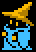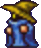 |
| NAME: Black Mage |
| OVERVIEW: Evolves into Black Wizard, allowing more use of weapons, armor, and greater access to spells. |
| WEAPONS: Masamune, Large Dagger, Silver Knife, Small Dagger, Mage Staff, Power Staff, Wooden Staff |
| ATTRIBUTES: High MP, high magic power, low HP, low strength, low physical defense, high magic defense, low accuracy |
MAGIC:
Black Magic: Fire, Lock, Slep, Lit, Dark, Slow, Tmpr, Ice, Fir2, Hold, Lok2, Lit2, Conf, Fast, Slp2, Ice2, Bane, Fir3, Slo2, Lit3, Qake, Stun, Rub, Ice3, Blnd
|
|
| FF1 |
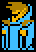 |
| NAME: Black Wizard |
| OVERVIEW: Evolved from Black Mage. Allows greater use of weapons, armor, and access to all Black Magic spells. |
| WEAPONS: Masamune, Cat Claw, Large Dagger, Silver Knife, Small Dagger, Mage Staff, Power Staff, Wizard Staff, Wooden Staff |
| ATTRIBUTES: Low strength, low agility, high magic |
MAGIC:
Black Magic: Fire, Lock, Slep, Lit, Dark, Slow, Tmpr, Ice, Fir2, Hold, Lok2, Lit2, Conf, Fast, Slp2, Ice2, Fir3, Slo2, Bane, Warp, Lit3, Qakem Stun, Rub, Blnd, Brak, Sabr, Ice3, Zap!, XXXX, Stop, Nuke
|
|
| FF3 |
| 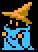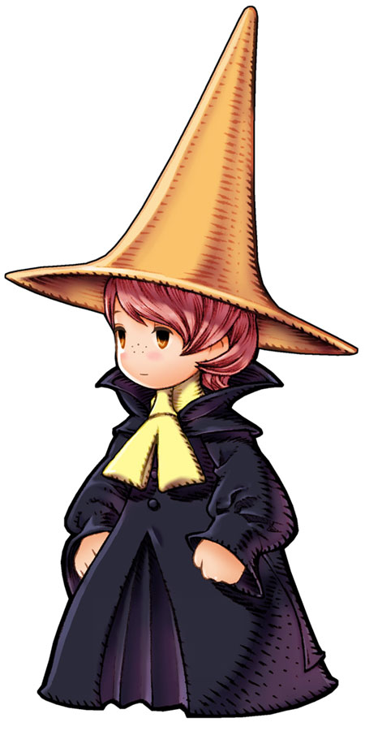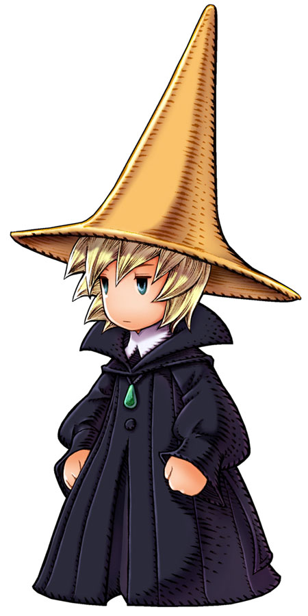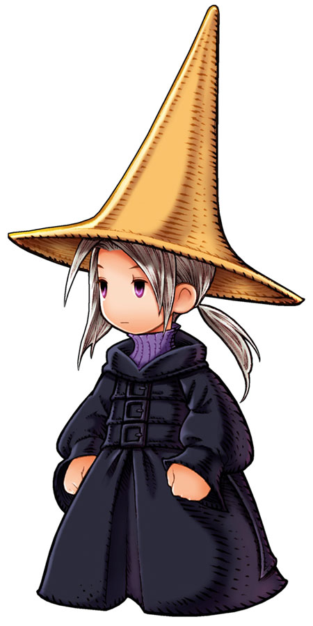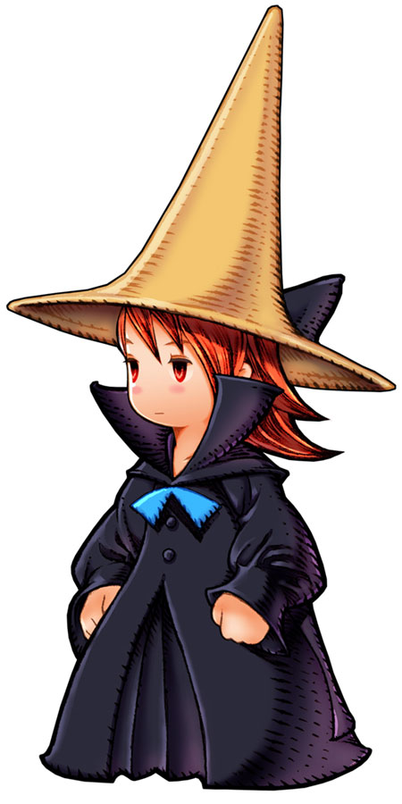 |
| NAME: Black Wizard (FF3) / Black Mage (FF3DS) |
| OVERVIEW: Evolves into Warlock. |
| WEAPONS: Knife, Dagger, Mithril Knife, Mithril Rod, Ice Rod, Fire Rod, Light Rod |
| ABILITIES/MAGIC:
Fight - Attack with equipped weapon
Magic - Cast magic spell
Run - Run away from battle
Item - Use an item from inventory
|
| ATTRIBUTES: High magic, low magic defense
|
|
| FF3 |
| 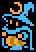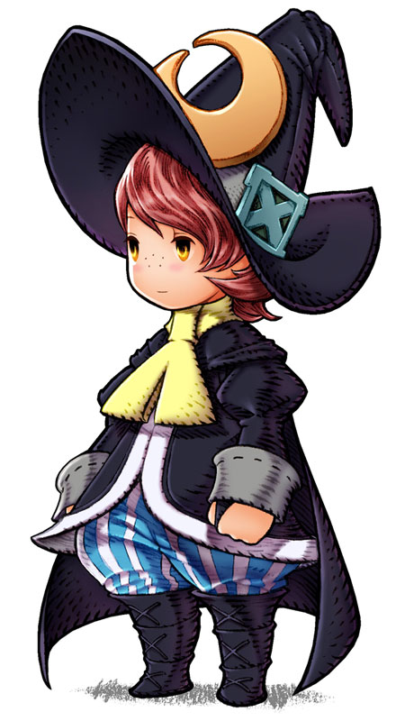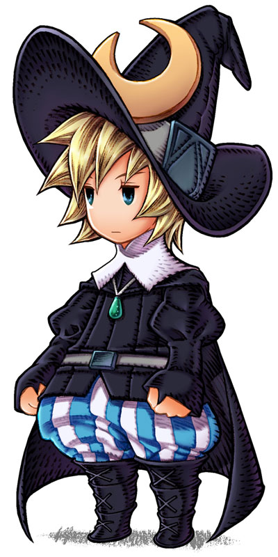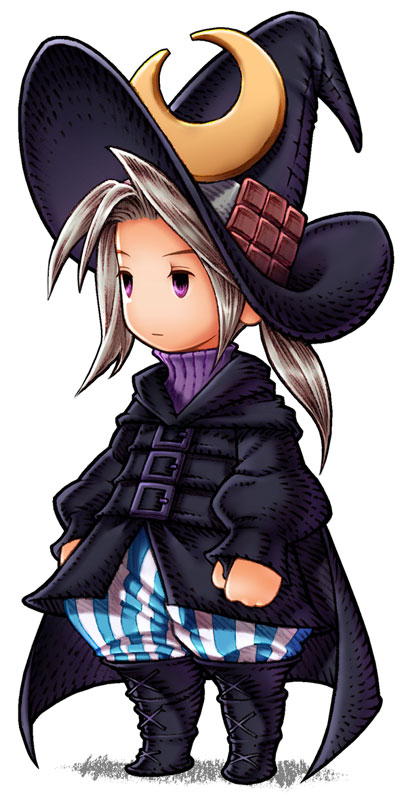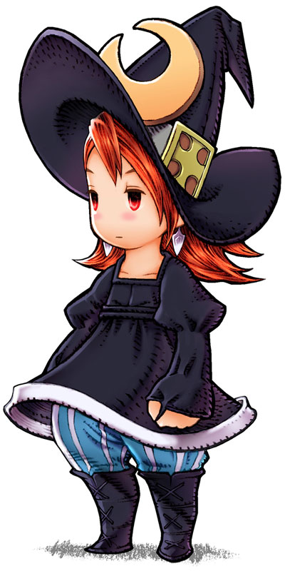 |
| NAME: Warlock (FF3) / Magus (FF3DS) |
| OVERVIEW: Evolved from Black Wizard. Remarkably, the Warlock can equip fewer weapons total, but has access to the Ultimate Rod. |
| WEAPONS: Mithril Rod, Ice Rod, Fire Rod, Light Rod, Ultimate Rod |
| ABILITIES/MAGIC:
Fight - Attack with equipped weapon
Magic - Cast magic spell
Run - Run away from battle
Item - Use an item from inventory
|
| ATTRIBUTES: High magic, high HP, low strength |
|
| FF4 |
  |
| NAME: Rydia |
| OVERVIEW: Rydia is technically a Caller. She is a Red Mage when she is a child, as she can also cast Cure, Sight, and Hold which are White Magic spells. |
| WEAPONS: Uses staffs and rods best |
| ABILITIES/MAGIC:
Call - Summon a monster to deliver a massive attack
Black - Cast Black Magic
|
| ATTRIBUTES: High magic, low strength |
|
| FF4 |
| 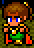 |
| NAME: Palom |
| OVERVIEW: Palom is a pure Black Mage (as opposed to Rydia), and can combine with Porom to unleash Comet. |
| WEAPONS: Uses staffs and rods best |
| ABILITIES/MAGIC:
Bluff/Boast - Increase magic power
Twin - Team with Porom to perform a special magic attack
Black - Cast Black Magic
|
| ATTRIBUTES: High black magic, low strength, low HP, low speed |
|
| FF5 |
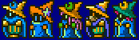
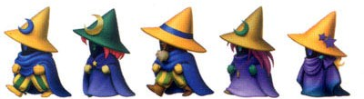 |
| NAME: Black Mage |
| OVERVIEW: Black Mages learn all the spells of a certain level once they have enough AP. |
| WEAPONS: Knives, Rods |
| ABILITIES/MAGIC:
!Black - Cast Black Magic (default)
MP+30% - Increase max MP by 30%
|
| ATTRIBUTES: High magic, low strength |
|
| FF8 |
| 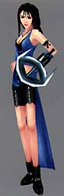 |
| NAME: Rinoa Heartilly |
| OVERVIEW: Though she does not equip rods, her limit involves casting powerful Black Magic at the enemy. Rinoa's other limit break involves training her dog Angelo to attack, find items, revive, etc. which has earmarks of a Trainer. |
| WEAPONS: Blaster Edge |
| LIMIT:
Angel Wing - Rinoa becomes uncontrollable, and casts only magic which harms or enfeebles the enemy at five times normal magic power
|
| ATTRIBUTES: High HP, high strength, high magic power, high magic defense |
|
| FF9 |
 |
| NAME: Vivi Orunitia |
| OVERVIEW: Vivi is the only character that can use Black Magic, and can also Focus to increase his power. There are other black mages in the game as enemies; they are variations on the same costume and powers. |
| WEAPONS: Staffs |
ABILITIES/MAGIC:
Focus - Increase magic power
Black Magic - Cast Black Magic
Trance:
Double Black - Cast two spells in the same turn when in Trance mode |
| SUPPORT ABILITIES (character specific): Reflectx2, Mag Elem Null, Return Magic, Half MP |
| ATTRIBUTES: High magic power, low speed, low strength |
|
| FF10 |
 |
| NAME: Lulu |
| OVERVIEW: Lulu uses dolls instead of Rods or Staffs. Lulu's Sphere Grid path leads her to learn most Black Magic, except Ultima. Ultima is centered at the sphere grid, so anyone really has an equal chance to learn it first. |
| WEAPONS: Dolls |
ABILITIES/SKILLS:
Black Magic - Cast Black Magic
Focus - Increase party's magic power and magic defense
Reflex - Increase party's evasion
Doublecast - Cast two spells in the same turn
Overdrive:
Fury - Build up power to cast several of the same spell at random enemies
|
| ATTRIBUTES: High magic, high magic defense, low speed, low strength |
|
| FFX-2 |
 |
| NAME: Black Mage |
| OVERVIEW: This Black Mage is almost exactly like Lulu from FF10, but can also absorb MP. |
| WEAPONS: Staff |
| ABILITIES/MAGIC:
Focus - Increase magic power
MP Absorb - Absorb MP from an enemy
Black Magic - Cast Black Magic |
| SUPPORT ABILITIES: Black Magic Lv.2 (decrease wait time for spell by 30%), Black Magic Lv.3 (decrease wait time for spell by 50%) |
| ATTRIBUTES: |
|
| FF11 |
  |
| NAME: Black Mage |
| OVERVIEW: These Black Mages have more abilities to increase their accuracy, mana recovery, and other self-improving features. |
| WEAPONS: Uses Staffs and Clubs best |
| ABILTIIES/MAGIC:
Manafont - Eliminates MP cost of spells
Elemental Seal - Enhances accuracy of next spell
Black Magic - Cast Black Magic
|
| SUPPORT ABILITIES: Magic Attack Up, Clear Mind (increases MP regained when resting), Conserve MP |
| ATTRIBUTES: High magic power, low physical defense |
|
| FF12RW |
 |
| NAME: Black Mage / Wizard / Kytes |
| OVERVIEW: Only enemy moogles can be black mages, but Kyes holds his own as well. |
| WEAPONS: Rods |
ABILITIES/MAGIC (Black Mage/Wizard):
Fire, Blizzard, Thunder, Stone, Firaga
Slowga, Hastega, Regenga, Stopga, Comet (Black Mage only)
Blizzaga, Thundaga, Stonega (Wizard only)
ABILITIES/MAGIC (Kytes):
Fire, Blizzard, Thunder, Stone, Firaga, Blizzaga, Thundaga, Stonega, Bio, Charge, Flare
|
|
| FF: Tactics |
 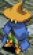 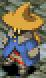 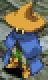 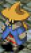 |
| NAME: Black Mage/Wizard (PSX) |
| OVERVIEW: This Wizard uses spells of Fire, Lightning, and Ice, and a few status spells. |
| WEAPONS: Rod |
ABILITIES/MAGIC:
Black Magicks/Black Magic (PSX): Fire, Fira/Fire2 (PSX), Firaga/Fire3 (PSX), Firaja/Fire4 (PSX), Thunder/Bolt (PSX), Thundara/Bolt2 (PSX), Thundaga/Bolt3 (PSX), Thundaja/Bolt4 (PSX), Blizzard/Ice (PSX), Blizzara/Ice2 (PSX), Blizzaga/Ice3 (PSX), Blizzaja/Ice4 (PSX), Poison, Toad/Frog (PSX), Death, Flare
Reaction Ability: Counter Magic - Counter magic attack with same spell
Support Abilities: Arcane Strength/Magic Attack Up (PSX)
Move Abilities: None
|
| ATTRIBUTES: High MP, high magic power, low evasion, low attack power |
|
| FF: Tactics Advance |
      |
| NAME: Black Mage |
| OVERVIEW: These are very similar to FFT Wizards, but only have only Fire, Lightning, and Ice spells. |
| WEAPONS: Rod |
ABILITIES/MAGIC:
Black Magic: Fire, Fira, Firaga, Blizzard, Blizzara, Blizzaga, Thunder, Thundara, Thundaga
Reaction Abilities: Return Magic - Counter magic attack with same spell
Support Abilities: Geomancy - Lower RES of elements by 1
Combo: Black Combo
|
| ATTRIBUTES: High MP, low HP, low attack power |
|
| FF: Tactics A2 |
         |
| NAME: Black Mage |
| OVERVIEW: Identical to FFTA Black Mages. |
| WEAPONS: Rods |
ABILITIES/MAGIC:
Black Magick: Fire, Fira, Firaga, Blizzard, Blizzara, Blizzaga, Thunder, Thundara, Thundaga
Reaction Abilities: Magick Counter
Support Abilities: Geomancy
|
|
Traits of Black Mage in Other Games
| FF6: All characters can learn any type of Black Magic by equipping Espers and earning AP. |
| FF7: All characters can learn any type of Black Magic by equipping Materia and earning AP to increase its power. |
| FF8: All characters can learn any type of Black Magic by drawing it from enemies or geographical points. |
| FFX-2: Several Garment Grids allow using Black Magic without needing to earn AP to learn it. |
Final Fantasy, all games and animation bearing the Final Fantasy name, and all characters in said games or animation are copyright their respective creators, including but not limited to Squaresoft, Square Enix, Square EA, Tokyo TV, and ADV Films.
 Characters
Characters Places
Places Stories
Stories Species
Species Organizations
Organizations Glossary
Glossary Transportation
Transportation Monsters
Monsters Jobs
Jobs Summons
Summons Items
Items Magic/Skills
Magic/Skills Weapon Types
Weapon Types In-Crossovers
In-Crossovers Ex-Crossovers
Ex-Crossovers Release Dates
Release Dates Name Origins
Name Origins Famous Moments
Famous Moments Music Database
Music Database Features
Features Game Help
Game Help Game Evolution
Game Evolution Square Art
Square Art Fan Flash
Fan Flash Final Fantasy Forums
Final Fantasy Forums Updates
Updates Site Info
Site Info Feedback
Feedback Full Index
Full Index Links
Links Staff
Staff{kind=link}